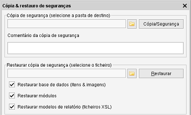

Cópia & Restauro de seguranças
Caminho de menu: Ferramentas > Cópia & Restauro de seguranças
À medida que a sua coleção cresce e cresce, é uma boa ideia fazer uma cópia de segurança dos seus dados.

Imagine-se a ter de reintroduzir toda a informação que perdeu após um ataque de vírus, uma avaria no disco ou... !
Faça cópias de segurança frequentemente e grave-as, no mínimo, num disco diferente do seu computador, mas,
de preferência num disco externo.
Criar uma cópia de segurança
Selecione uma pasta destino onde o Data Crow possa escrever a sua cópia e clique em Cópia/Segurança. Uma vez
feitas as definições, os módulos, as imagens e a base de dados foram copiados para uma segurança!
Restaurar uma segurança
Primeiro tem de indicar o que deve ser restaurado da segurança. Na maioria dos casos, será suficiente restaurar só a base
de dados. Opcionalmente, pode restaurar módulos e modelos de relatório. Isto só é necessário quando a
cópia contém módulos e/ou relatórios personalizados ou modificados.
Para restaurar uma segurança, navegue até ao ficheiro da cópia de segurança e clique em Restaurar.
O Data Crow restaura a base de dados (substituindo a atual!) e as suas imagens e definições. Após terminar o restauro,
o Data Crow está pronto a funcionar com a sua base de dados restaurada, usando as definições restauradas.